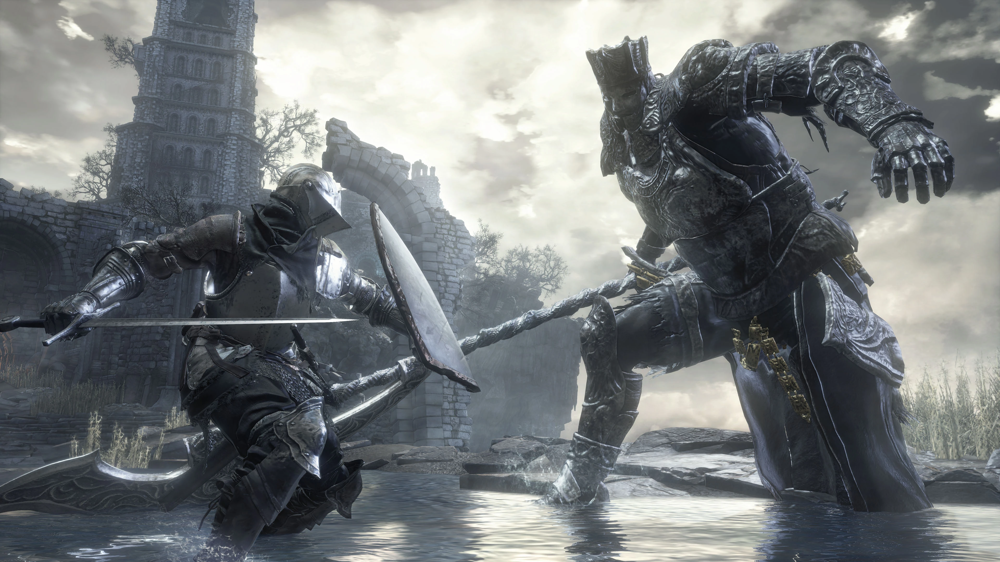
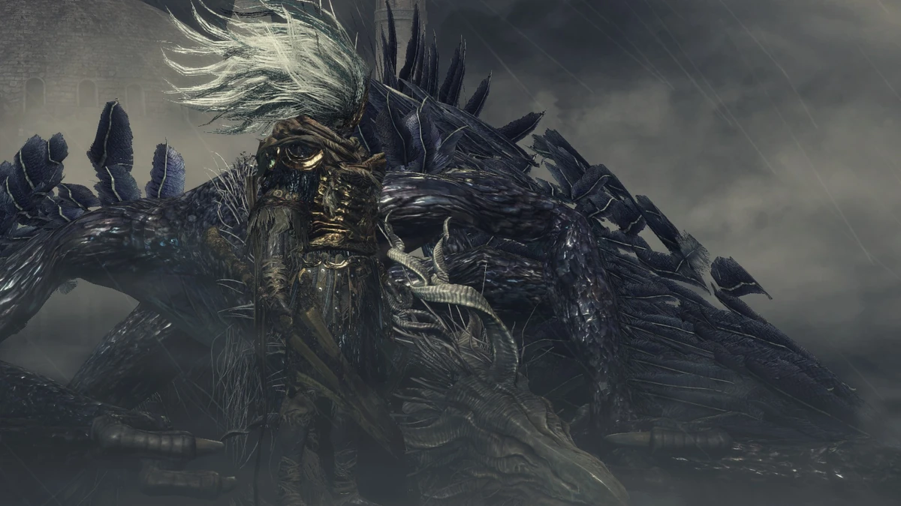
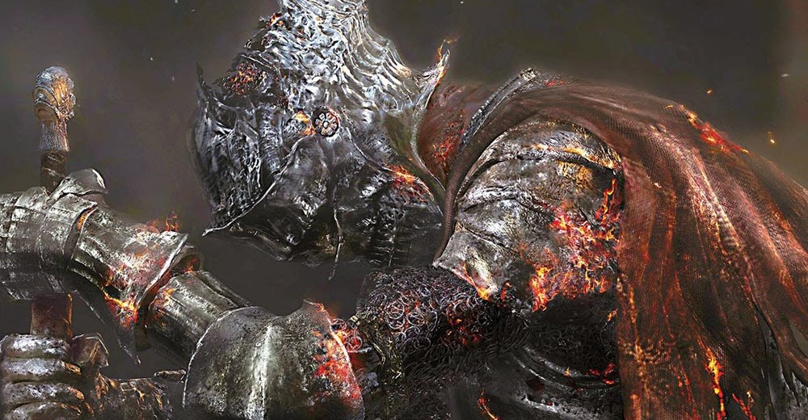

- Campeón Gundyr
Un combate simbólico y desafiante.
Representa el comienzo y el final del viaje, un reflejo del jugador convertido en guerrero.
Su intensidad y su música lo convierten en un duelo cargado de significado.

- El rey sin nombre
Uno de los combates más épicos del juego.
La lucha contra el rey de los dragones es un espectáculo visual y mecánico.
El viento, los rayos y su poder desmedido crean una experiencia inolvidable.

- Alma de Ceniza
El mejor jefe sin duda, estas luchando contra ti mismo (tu personaje principal en el dark souls 1).
El jefe final y una síntesis de toda la saga.
Utiliza las habilidades de antiguos héroes, como si llevaras enfrentándote a la historia misma.
Su derrota marca el fin del ciclo y el inicio de un nuevo destino.
